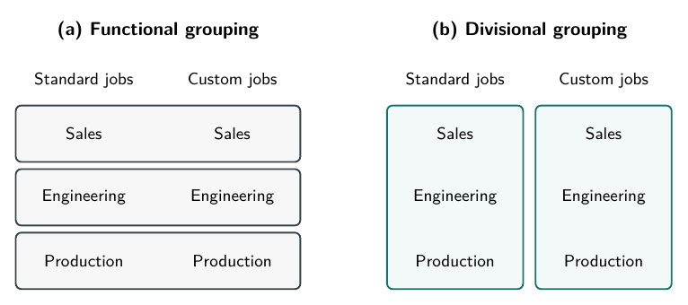

Who owns the custom order?
Cedar Components makes parts that other businesses use in their products. A customer wants a modified part delivered sooner than Cedar’s normal schedule permits. The sales representative sees a promising order. Engineering sees design work. Production sees an interruption to a long run of standard parts.
Each department has a reason to resist the others. Sales staff are rewarded for signed orders. Engineers are assessed on keeping design hours down. Production supervisors are praised for long, uninterrupted runs. Those measures encourage attention to real business concerns. Taken separately, however, they do not tell anyone whether this custom order is worth accepting.
Sales could promise a date that production cannot meet without delaying another customer. Engineering could save its own hours by approving a design that is difficult to manufacture. Production could protect its schedule by rejecting valuable custom business. Everyone might meet a local target while Cedar loses money or disappoints customers.
Chapter 5 asked who should make a decision. This chapter asks how to group the work around those decisions. Should Cedar keep specialists in separate departments, create a custom-products division, or assign people from several departments to a project team?
The answer depends on which relationships require close coordination and what each arrangement costs. Redrawing boxes does not remove scarce capacity, conflicting interests, or imperfect information. It changes where those problems must be resolved.
Specialization creates both expertise and dependence
Specialization means concentrating on a narrower set of tasks. Cedar’s engineers learn how designs behave under different conditions. Production staff learn which setups create defects or delays. Sales staff learn what customers need and which promises matter to them.
Repetition can build skill. Specialist equipment can serve several jobs. An experienced engineer can help a junior engineer solve a problem that would take much longer alone. These are reasons not to give every salesperson a machine and ask them to design and manufacture whatever they sell.
But dividing work also creates interdependence: one person’s results depend on another person’s choices. The engineer needs accurate customer requirements. The production planner needs a stable design. Sales needs a delivery estimate that accounts for existing commitments. A change in any one place may require changes elsewhere.
A handoff is the point where work or information passes between people. Cedar might require sales to record dimensions, quantities, and the requested date before engineering begins. That routine saves repeated questions when orders are familiar. A genuinely unusual job may still require a conversation because the form cannot anticipate every relevant detail.
Some failures are coordination problems even when interests agree. Two conscientious employees may use different versions of a drawing. Other failures reflect incentives: someone may withhold a complication because recording it would make their own results look worse. Buying shared software could help the first problem without solving the second.
Job design concerns which tasks and responsibilities belong together. Cedar could ask the engineer who develops a custom design to participate in its first production run. The engineer then sees consequences that a completed-drawings count misses. That wider job may reduce later rework, but it also takes time away from new designs. Combining tasks is useful when the information and incentive gains exceed the lost advantages of specialization.
The relevant question is not whether employees should specialize. It is where to draw the boundaries, what must cross them, and who has a reason to handle the crossing well.
AI, tasks, and jobs
A job is a bundle of tasks, not a single activity. Suppose Cedar adopts an AI tool that drafts routine summaries of customer requirements. Engineers still check those summaries, resolve unfamiliar design problems, and coordinate with production. Some drafting work has been automated, but the engineering job has changed rather than disappeared. The distinction is between technology that substitutes for a person’s work and technology that complements it by making the remaining work more productive, a central point in Autor’s (2015) discussion of automation.
This is not a guarantee against job loss. Even if no entire occupation disappears, fewer employees may be needed to handle the same volume of work. Lower costs might expand sales, and new tasks might create demand for workers, but neither must offset the displaced work. Acemoglu and Restrepo (2019) distinguish these displacement and new-task effects. Gains for the firm need not mean gains for every employee.
Compensation may shift toward the skills needed for the remaining tasks. If sound judgment becomes more valuable while workers who can supply it remain scarce, their pay may rise. But being difficult to automate does not by itself make a task well paid: demand and the supply of capable workers still matter. For Cedar, the managerial question is therefore how to regroup tasks and assign responsibility after adopting the tool. Rewarding the number of summaries produced could encourage precisely the wrong behavior if careful checking is now the important contribution.
Functional departments: pool the specialists
In a functional structure, people are grouped by the kind of work they do. Cedar has sales, engineering, and production departments. Each serves both standard and custom jobs.
This arrangement lets the engineering manager allocate scarce expertise across orders. A specialist need not sit idle in a quiet custom-products unit while standard production has a difficult problem. Colleagues can share methods, review technical work, and train one another. Production can also combine compatible jobs into longer runs.
Now follow the custom order. Sales records what the customer wants. Engineering estimates the design work and identifies technical limits. Production estimates capacity needs and effects on existing commitments. If the departments disagree about accepting the job, Cedar’s general manager resolves the conflict. That manager needs the relevant information before sales commits the firm.
The gain from pooling expertise therefore comes with a coordination burden. A department head sees many uses for their own resources but may know less about the full value of one customer’s order. The general manager sees the broader choice but cannot personally master every drawing and machine schedule. Frequent disputes can turn that manager into a bottleneck.
Local performance measures can make the burden worse. A production manager rewarded only for uninterrupted runs may resist a profitable interruption. Merely asking that manager to be more cooperative leaves the reward unchanged. Evaluation should account for whether production met an agreed schedule and handled justified exceptions, not just whether it avoided changes.
That does not mean dropping all departmental measures. Design hours and machine utilization still contain useful information. The difficulty is interpreting them alongside the consequences for the order and for other work. A department should not receive credit for an apparent saving that simply shifts a larger cost elsewhere.
Functional organization is a plausible starting point when specialists and equipment must be shared extensively. It becomes harder to operate through routine handoffs when different customers repeatedly require closely coordinated, unusual responses.
Divisions: group the work around the business served
In a divisional structure, several functions are grouped around a product, customer group, or region. Cedar might separate standard products from custom products, with each division responsible for its own sales, engineering work, and production arrangements.
The custom-division manager can then compare the sales opportunity with the design and production consequences inside one unit. Instead of sending every disagreement between three department heads upward, the division can settle more tradeoffs close to the customer. Its evaluation can include whether completed custom jobs justify the resources they consume.
This does not turn the division manager into an expert in every function. Technical specialists still provide information and challenge infeasible promises. Nor does the division gain unlimited authority over Cedar’s other business. If a custom job needs a machine slot already promised to standard products, someone must resolve the conflict between divisions.
The same work appears in both panels of Figure 9.1. In the functional arrangement, the horizontal boundaries keep similar specialists together across jobs. In the divisional arrangement, the vertical boundaries bring different functions together around the jobs they serve. The boundaries move; the need for sales, engineering, and production does not disappear.

Figure 9.1. The same work can be grouped by function or by the jobs it serves.
The main cost is giving up some pooling. Separate divisions might each need access to engineering expertise that one department previously supplied. Duplicating a scarce specialist could be expensive; sharing that specialist preserves a scheduling conflict. The diagram does not imply that each cell requires a separate full-time employee.
Division-level incentives can also move the agency problem rather than eliminate it. The custom manager may hoard a useful machine slot or resist sharing a successful design with standard products. A stronger interest in the whole custom job is not the same as a stronger interest in Cedar as a whole.
Dessein, Garicano, and Gertner analyze a related tension between gains from shared activities and adaptation to individual business units. Their framework connects the allocation of authority to managers’ incentives; combining activities is not automatically a costless improvement. Dessein, Garicano, and Gertner, 2010
For Cedar, a dedicated division becomes more plausible if custom work is large and persistent enough to support its resources. An occasional unusual order may not justify a permanent reorganization.
A project team needs more than a meeting
A cross-functional team brings together people from different functions to handle a shared task. Cedar could assign a salesperson, engineer, and production planner to the custom order while leaving their permanent departmental homes unchanged.
They can examine the proposed design and delivery date together before making a promise. That reduces the chance that a problem is discovered only after the next department receives the job. It also preserves access to the larger specialist groups.
But what can the team decide? Suppose its members agree on a schedule, yet their department heads can withdraw the promised time whenever another target is threatened. The team has responsibility in name but no reliable means to carry it out.
A more workable proposal gives the team leader authority to coordinate the agreed design and schedule within an approved resource envelope. Technical standards remain with the responsible specialists. A change that displaces another committed order goes to the general manager. Department heads commit the necessary staff time, and the general manager reviews the completed job and effects on other work.
These are proposed responsibilities for Cedar, not a universal rule. The arrangement still costs meeting time and requires resolving competing demands on members. Giving two people unrestricted authority over the same schedule would create another conflict. The team should know which decisions it owns, which require approval, and where unresolved disagreement goes.
| Arrangement | Coordination gain | New cost or remaining problem | Decision owner | Evaluation implication |
|---|---|---|---|---|
| Functional departments | Pool specialists across jobs | Cross-functional disputes and senior-manager bottlenecks | Department heads within functions; general manager across functions | Examine local results and costs imposed on other work |
| Customer/product divisions | Coordinate several functions around a business served | Duplicated capacity and conflicts between divisions | Division manager within the unit; general manager across units | Judge the division’s results and effects on shared resources |
| Limited cross-functional team | Resolve an unusual job’s handoffs together | Meeting time and competing departmental demands | Team leader within agreed limits; general manager for escalated decisions | Review the whole job and identifiable individual responsibilities |
On a small screen, scroll the table sideways to see all columns.
A shared result does not settle individual incentives
Successful delivery depends on several people. Yet observing a successful delivery may reveal little about who prevented a problem or whose colleague repaired one. Team production draws attention to work whose result is jointly produced and whose individual contributions are difficult to disentangle. Alchian and Demsetz made this measurement problem central to their analysis of organization. Alchian and Demsetz, 1972
Rewarding the shared result gives members a reason to care about one another’s work. It can also create free riding: receiving some benefit from the group’s efforts while avoiding a costly contribution oneself. Holmström’s analysis of team incentives develops the difficulty of motivating useful actions that cannot be directly observed and contracted for. Holmström, 1982
Consider a small, separate calculation for Cedar’s engineer and production planner. Each can perform an additional check on a custom job. Each check adds $200 of expected contribution before bonuses and $120 to the expected shared bonus pool. The two workers split that pool equally.
Each check also requires effort that its worker values at $80. This is a private effort cost expressed in dollar-equivalent terms, not another wage payment by Cedar. Fixed pay and normal work are the common baseline. All the figures are hypothetical changes from that baseline.
The bonus is based on the job’s measured result, not on directly verifying the checks. Outcomes also reflect other influences. The table therefore reports expected effects, not a way to infer effort from one observed result. For this calculation, ignore risk aversion, future career consequences, and intrinsic satisfaction. Assume the two checks’ expected effects add, so we can isolate the sharing problem without also modeling technical complementarities.
| Who performs the extra check? | Total expected bonus | Engineer’s net benefit | Planner’s net benefit |
|---|---|---|---|
| Neither | $0 | $0 | $0 |
| Engineer only | $120 | −$20 | $60 |
| Planner only | $120 | $60 | −$20 |
| Both | $240 | $40 | $40 |
On a small screen, scroll the table sideways to see all columns.
One check adds $120 ÷ 2 = $60 to each person’s expected bonus. The person doing it bears the whole $80 effort cost, so their own net change is $60 − $80 = −$20. The other person receives $60 without that extra effort.
If both check, each receives $120 and bears an $80 effort cost, leaving $40. Both are better off than if neither checks. Nevertheless, either can gain by omitting their own check while the other continues: their net benefit rises from $40 to $60. The other worker’s net benefit falls from $40 to −$20. Under the stated assumptions, neither checking is the equilibrium, even though both would prefer the outcome in which both check.
Cedar also loses useful work. Per check, it retains $200 − $120 = $80 after the added bonus. Do not subtract the worker’s effort cost again from Cedar’s cash return. Counting the firm and both workers together, total surplus rises by $200 − $80 = $120. Bonuses redistribute that surplus; they are not an additional resource cost to the combined group.
The example identifies an incentive problem, not a character defect or a prediction that all teams fail. A worker may value doing good work, expect future cooperation, or anticipate an informative review. Those mechanisms change the comparison. Calling people a team, by itself, does not.
Make contributions visible without destroying cooperation
Cedar could attach individual responsibility to observable stages: the salesperson confirms requirements, the engineer records design checks, and the planner flags capacity conflicts. These records can help a reviewer reconstruct a problem. They should not become a substitute for judgment about whether the work was useful.
If the engineer earns credit simply for checking boxes, completing the record may become more attractive than investigating an unusual defect. If the planner is judged solely on avoiding delays, the planner may discourage difficult but valuable jobs. The measurement problem from Chapter 6 remains inside the team.
Team members may have information a distant supervisor lacks. The planner can notice that a design arrives without a needed explanation. Peer feedback can make that information usable. But coworkers can also protect one another, settle personal disputes through ratings, or avoid reporting problems that threaten a common bonus. Peer observation is a possible source of evidence, not automatic impartiality.
Smaller teams make an individual’s share of a fixed reward pool larger. With two equal shares, a worker receives half the pool’s incremental reward; with four, one quarter. This comparison holds the added pool fixed. Actual team size also changes skills, workload, observation, and opportunities to help, so it does not establish that the smallest team is best.
The reviewer needs incentives too. A supervisor who wants an easy month may avoid investigating a failure. Alchian and Demsetz discuss giving the monitor a claim on what remains after other agreed payments—a residual claim—as one way to reward better monitoring. That mechanism is not a guarantee of accurate judgment. Alchian and Demsetz, 1972
At Cedar, reviewing the team leader could mean checking promised dates against actual changes, examining a sample of problem jobs, and asking whether other orders absorbed hidden costs. This adds expense and managerial time. The aim is worthwhile review, not an endless chain of inspectors or a claim that every bad outcome reflects poor effort.
Internal bargaining can consume resources too
Suppose Cedar keeps scarce machine time under the general manager’s control. Departments now have an incentive to persuade that manager that their jobs deserve priority. Some persuasion supplies essential information. A documented customer deadline can improve the decision.
Other effort may mainly seek a favorable allocation: repeated private appeals, selective omission of costs, or elaborate arguments for protecting one department’s target. Influence costs include resources spent seeking these favorable decisions and losses from distorted choices. Milgrom’s work explains why discretion can encourage costly influence activity and why limiting it can sometimes improve organization. Milgrom, 1988
Cedar might require a common request record showing customer value, required capacity, and displaced commitments. Routine cases could follow an announced priority rule, with an explicit exception process. This proposal could reduce repeated lobbying, but it could also reject useful information if applied rigidly.
The distinction is between information that improves the choice and effort directed mainly at changing who receives the benefit. A manager should not treat every objection as politics. Nor should a department’s willingness to argue be mistaken for evidence that its request creates the most value.
Choose boundaries around the important tradeoffs
Return to the custom order. Before reorganizing Cedar, trace where it gets stuck. Are requirements incomplete? Is engineering unavailable? Does production lack capacity? Can nobody authorize a justified schedule change? Or can someone authorize it but gain personally by refusing?
These diagnoses imply different responses. A clearer handoff can help missing information. A named decision owner can resolve an authority gap. A changed evaluation rule may address a distorted incentive. Another meeting will not create machine capacity, and another manager will not automatically make the existing information credible.
If custom jobs are occasional and specialist sharing is valuable, a bounded cross-functional team is a plausible trial. If custom work becomes a persistent business with different requirements, a dedicated division deserves closer comparison. In either case, specify who can commit resources and who reviews consequences beyond the unit.
Follow-up should examine more than the team’s own score. Did rework fall? Were promised dates realistic? Did standard jobs suffer? How much additional coordination time was used? A better result after a change is informative, but a shift toward easier orders could also explain it. Compare the proposed mechanism with the actual pattern of work before declaring success.
Organizational structure affects agency costs because it changes what people know, what they control, whose results they care about, and who can assess them. A structure that reduces one conflict may create another. Chapter 10 adds budgets and internal prices: further ways to guide choices when units use resources that matter elsewhere in the firm.
Study map
- Specialization builds expertise and permits shared resources, but it creates handoffs and interdependence.
- Functional grouping pools similar work; divisional grouping coordinates different functions around a business served. Neither removes all conflicts.
- A cross-functional team needs committed resources, bounded decision rights, and a review arrangement—not just a shared name.
- Shared rewards can support cooperation while diluting the private return to effort. Distinguish expected contributions from observed outcomes.
- Individual records, peer feedback, and supervisory review can improve accountability, but each has costs and incentives of its own.
- Judge a proposed structure by the tradeoffs it improves and the new costs it creates, including effects outside the unit.
Practice and discussion
- Cedar’s custom orders are rare, while a specialist engineer is needed across many standard jobs. Compare a permanent custom division with a limited cross-functional team. Identify one benefit, one cost, and one decision that needs an explicit owner under each arrangement.
- In the two-worker example, reduce the private effort cost from $80 to $50, leaving every other assumption unchanged. What is each worker’s private gain from doing their own check? Does the incentive to omit it remain? Explain why this calculation does not identify effort from a realized bonus.
- Return to the original $80 effort cost. Instead raise the added total bonus per check from $120 to $180, still split equally. Calculate the checker’s private net gain and Cedar’s retained contribution per check. Does restoring the incentive establish that this is the best compensation plan?
- Cedar gives the team leader a delivery target but allows department heads to withdraw staff without consulting the team. Explain the authority problem. Propose a bounded allocation of decisions and identify who should review effects on other jobs.
- A department submits evidence that a priority rule will delay a valuable order. Another department repeatedly requests an exception without disclosing the work it would displace. What information would distinguish useful communication from costly influence? What could be lost by banning all exceptions?
Check your arithmetic
For question 2, the worker’s expected bonus gain remains $120 ÷ 2 = $60. Net private gain is $60 − $50 = $10, so checking is individually worthwhile under the simplified assumptions, holding the other’s choice fixed.
For question 3, each worker gets $180 ÷ 2 = $90 per check. The checker’s private net gain is $90 − $80 = $10. Cedar retains $200 − $180 = $20 per check. Stronger incentives leave less of each check’s contribution with the firm; these inputs do not establish an optimal plan.
Source note
The chapter uses Alchian and Demsetz’s 1972 article for the joint-output measurement problem and the monitor’s incentives; Holmström’s 1982 article for team moral hazard; Dessein, Garicano, and Gertner’s 2010 article for the interaction of shared activities, local adaptation, and authority; and Milgrom’s 1988 article for influence activity. Selected passages or abstracts were verified, not every result in those papers. Cedar, the arithmetic, the grouping figure, and the public questions were created independently for this book. None supplies empirical estimates or an approved operating policy.